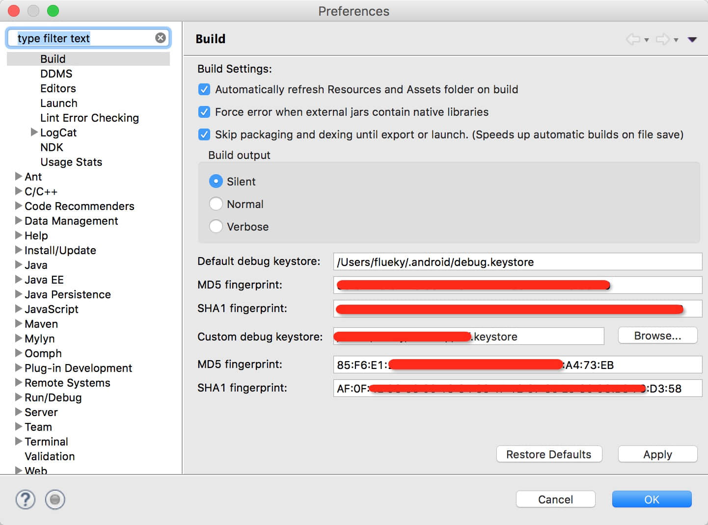
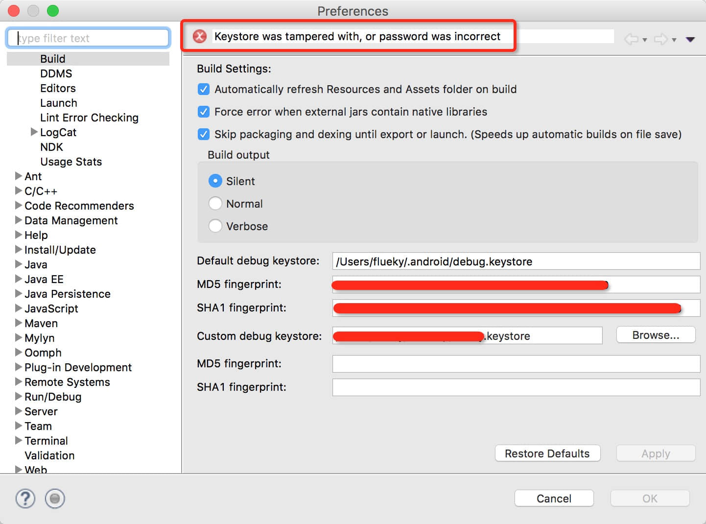
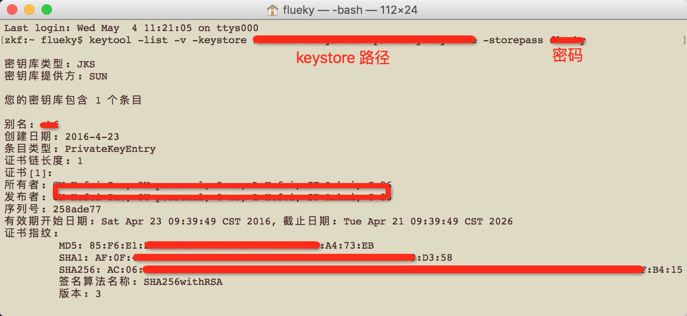
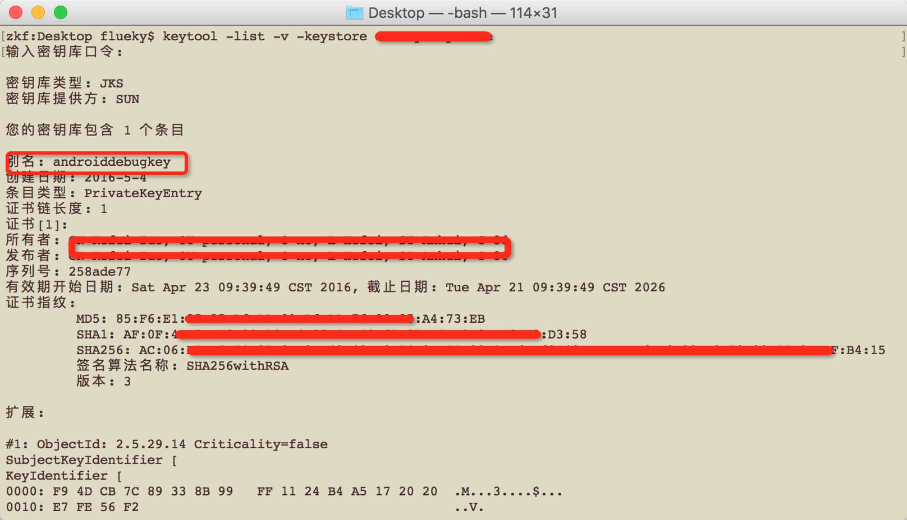
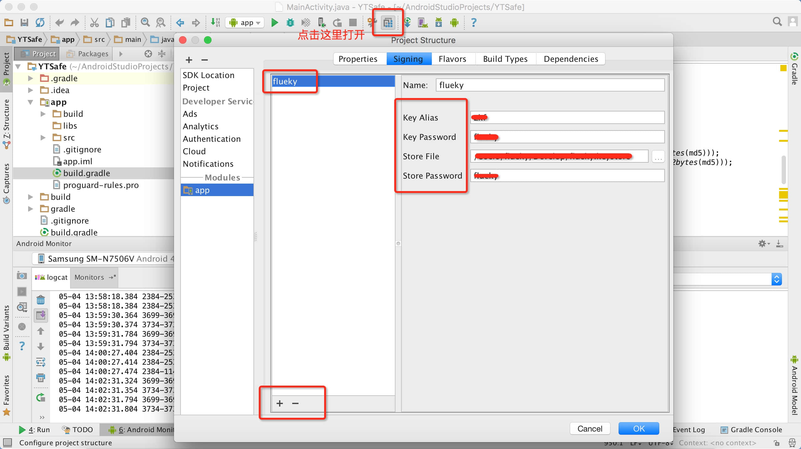
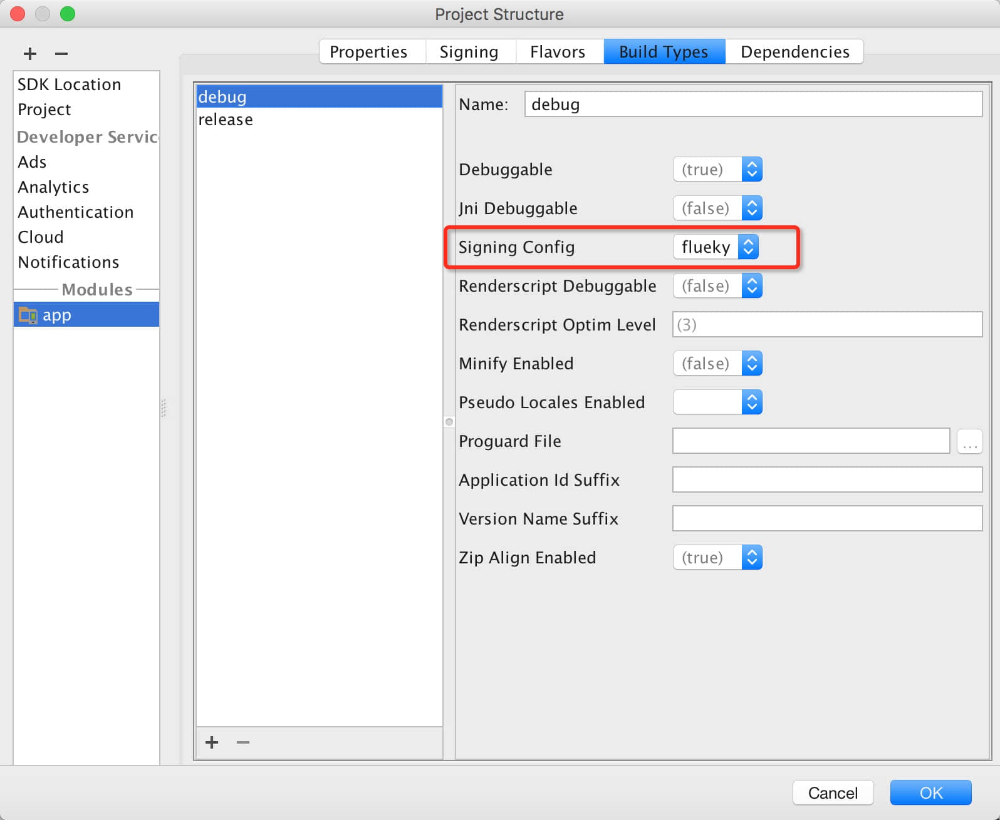
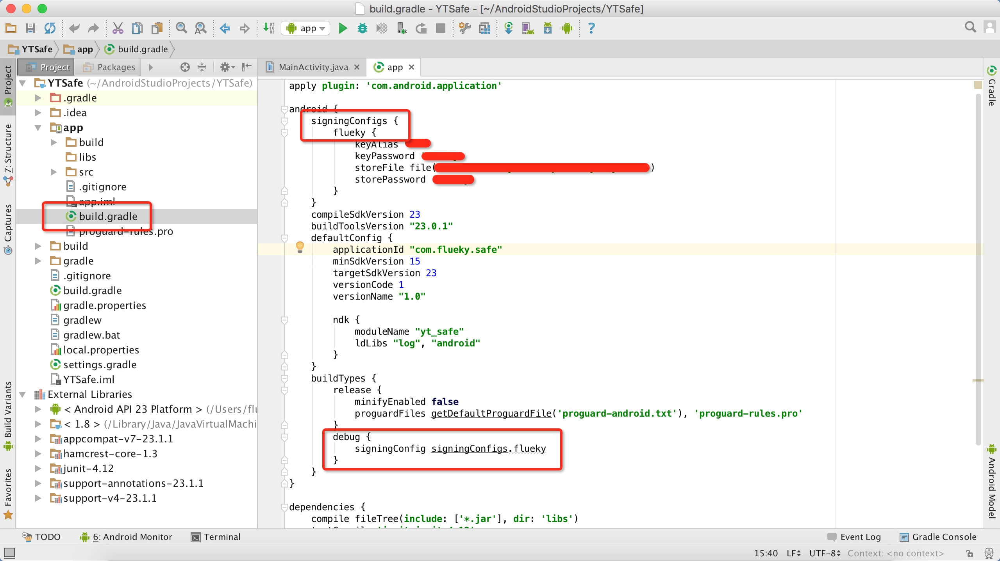

从事Android开发的小伙伴们，想必都会遇到这样的问题。当你的应用中需要集成百度地图、极光推送等第三方平台时，会去申请一个叫做AppKey的东西。与此同时，你得提供下应用签名信息的MD5或SHA1。然后就悲催的发现，只有用指定的签名文件打包时，该功能才能正常使用。如果你用的是开发工具的debug keystore签名信息，直接run一下就好，如果你用的是APP发布时候的keystore，每次测试时都得export 一个apk。心中一万只草泥马在奔腾的有木有？
楼主之前的小伎俩就是，去申请两个AppKey，分别对应debug keystore 和 release keystore。然后在心中默默地为自己的机智点个赞。然而一些比楼主更聪明的小伙伴发现，eclipse里面可以替换签名文件。于是满怀欣喜的去指定一个keystore，期待这样的画面（注意我此处的md5和sha1）：
然而看到的是这样的：
小伙伴的内心应该是崩溃的。
签名文件（keystore）
在生成签名文件时候，输入的最重要的三条信息是：store password、key alias、key password。有过用eclipse export apk 经验的童鞋应该很清楚这三个信息的作用。
此时应该很好理解之前的错误了，因为指定debug keystore时，eclipse根本没让输入以上三个信息。我也就呵呵一笑了……再看默认的debug keystore，会有一种错觉，该签名文件没有密码。
然而，事实并不是如我们所想的那样。默认的debug keystore的三个信息如下：
- store password：android
- key alias：androiddebugkey
- key password：android
并且，eclipse 的debug keystore只认含有这三个信息的keystore。
修改签名文件
已经知道了错误原因，那么接下来的解决方案只能尝试着去修改keystore里的这三个信息了。总不能去重新生成一个包含这个三个信息的keystore吧？然并卵……
修改之前，先查看一下keystore里的信息：
注意此处的MD5和SHA1与之前截图的一致。
查看keystore信息：keytool -list -v -keystore “keystore 文件” -storepass “keystore 密码”
将上述三个信息，分三步修改。比较坑爹的是，此处只能用命令玩了（修改之前，记得将原有的签名文件备份）。
- 修改store password。
命令：keytool -storepasswd -keystore “keystore 文件”。
会提示输入旧的密码，再输入两次新密码，此时将新密码改成android。
- 修改key alias。
命令：keytool -changealias -keystore “keystore 文件” -alias “keystore 别名” -destalias “目的别名”。
将目的别名改成：androiddebugkey，会提示输入第一个密码，就是第一步改过的android，第二个密码是之前的key password。
- 修改key password。
命令：keytool -keypasswd -keystore “keystore 文件” -alias “指定修改密码的别名”。
由于，一个keystore中，可以存储多个alias，因此此处需要指定修改密码的alias（这里应当是androiddebugkey），然后需要输入store password：android（修改后的）。再输入旧的key password（之前只是修改了alias ：androiddebugkey）。最后输入两次新的key password：android。
最后，再次查看签名文件信息：
输入的密钥库口令，已经是修改之后的android，alias 也已经修改成androiddebugkey。现在就可以放在eclipse里面替换了。
强大的AndroidStudio
看到这里，心很累了有木有？感觉eclipse是无比的坑爹。很好奇，AndroidStudio是怎么实现这个功能的，那么接下来的操作，也许会让你惊呆。
第一步，添加一个签名文件配置信息。选择keystore，并输入store password、key alias，key password。
第二步，在debug模式中，选择之前添加的签名文件配置信息。
也可以直接在gradle中配置。
然后，就没然后了。对Studio 只有一个评价，android开发神器。没有之一……
不说了，我去卸载eclipse。